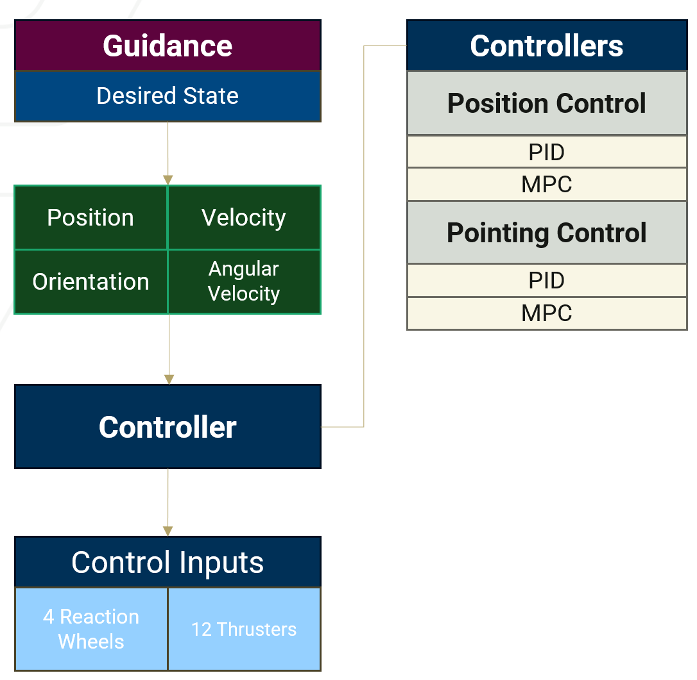
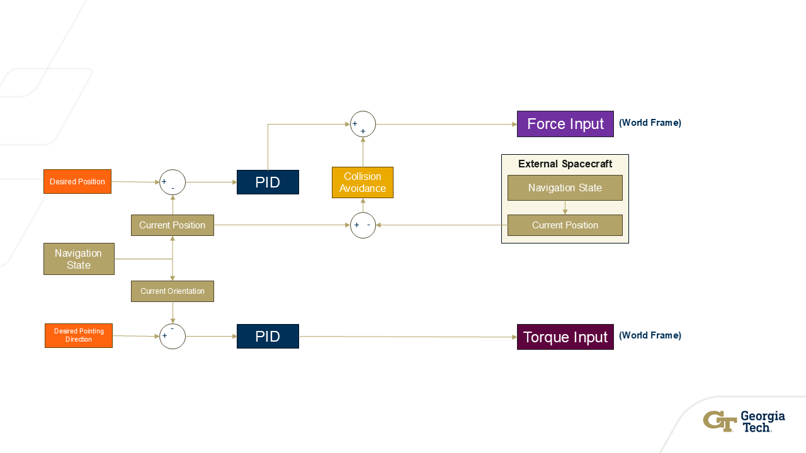
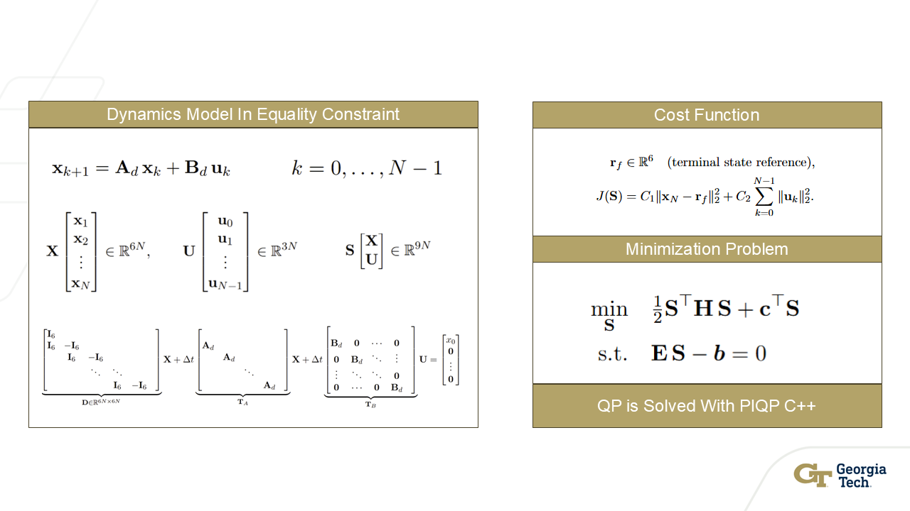
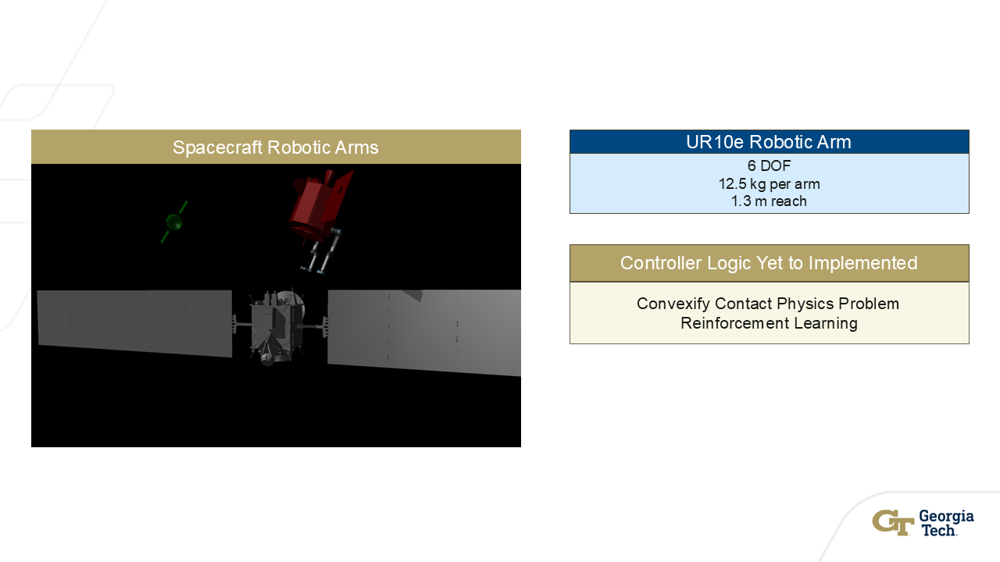
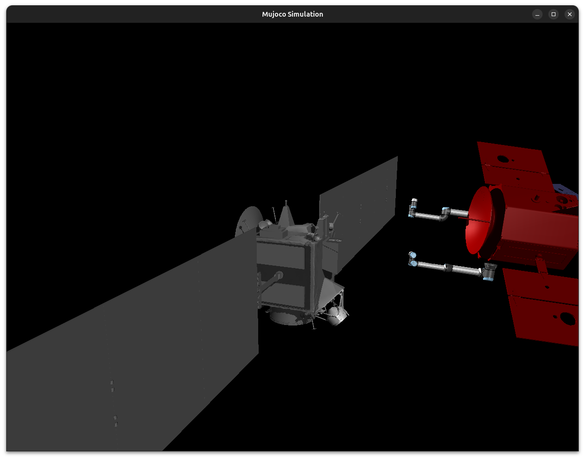

Hridai Ambati
I have a passion for multi-agent autonomy within the realm of aerospace robotics. My work primarily focuses on this area at the Aerospace Robotics Laboratory (ARL), where I contribute to advancing innovative solutions for complex aerospace systems.
Welcome
This site contains my work and experience in research. I am currently looking for roles in GNC, Autonomy, and Systems.
Resume
Download a one-page PDF with selected experience, projects, and skills.
About
My educational and career goals are to enable cooperative space operations through advanced robotics, spacecraft GNC, and high-fidelity simulation. I will design and validate reusable frameworks for formation flight, spacecraft swarms, and on-orbit interaction that utilize perception, planning, and control with rigorous testing. In graduate study, I will improve my knowledge of orbital mechanics, optimal control theory, autonomy, and systems engineering to create open and modular tools for motion planning. These tools will combine dynamic models, modern control theory, and machine learning techniques to develop powerful and efficient behavior that handles safety, uncertainty, and constraints effectively. My end goal is to use spacecraft autonomy that cooperates, self-maintains, and adapts to enable larger missions with extended lifetimes within a more resilient spacecraft infrastructure.
Featured Project — A Multi-Agent Spacecraft Simulation Framework
The transition from large, monolithic satellites to fleets of smaller spacecraft demonstrates the critical role of validating and evaluating distributed space systems for the future of scientific and commercial missions. This paper presents a high-fidelity simulation framework for the study of formation flight dynamics, development of GNC (guidance, navigation, and control) algorithms, and the simulation of inter-spacecraft interactions. The framework is built on Robot Operating System 2 (ROS 2) and the physics engine MuJoCo. The simulation environment takes place in a relative orbit scenario where dynamics models such as the Hill–Clohessy–Wiltshire (HCW) equations can be selected to determine the behavior of all bodies. The simulation supports multiple spacecraft agents with independent sensors, actuators, robotic arms, and GNC systems. State estimation on each spacecraft involves filtering, using a chosen method such as the Extended Kalman Filter (EKF), for sensors such as accelerometers, gyroscopes, and cameras. The GNC systems feature cooperative control algorithms for orbit maneuvers and robotic-arm interactions. Preliminary results demonstrate accurate tracking of desired relative trajectories under disturbances, efficient actuator usage, and scalability to larger formations. The architecture is designed to be extensible and provides a tool to integrate more advanced techniques such as reinforcement learning (RL). By combining multi-agent dynamics, estimation, and control, the framework provides a powerful and adaptive tool for improving performance in real-time spacecraft formation flight.
ROS 2 MuJoCo EKF HCW


A Multi-Agent Spacecraft Simulation Framework
Overview
This high-fidelity simulation framework facilitates the development and testing of formation flight systems. The framework supports multiple dynamics models, guidance, navigation, and control (GNC) algorithms, spacecraft interactions, and state estimation/filtering techniques. Built on ROS 2, the physics simulation is powered by MuJoCo.
Sample simulation demonstration of the multi-agent spacecraft framework.
Framework
The framework leverages MuJoCo as its physics engine for its robust capabilities in full 6-DOF rigid body dynamics, realistic joint contact physics, and customizable dynamics models. Additionally, MuJoCo provides comprehensive sensor and actuator models along with high-quality OpenGL visualization, enabling accurate and visually informative simulations. The framework is built on ROS 2, which offers a modular architecture through nodes, topics, and services that facilitate parallel execution and precise simulation timing control. ROS 2's efficient launch and shutdown management capabilities ensure reliable and scalable operation, making it ideal for complex multi-agent spacecraft simulations.
Dynamics Modeling
The Hill-Clohessy-Wiltshire (HCW) equations provide a fundamental model for describing relative motion between spacecraft in formation flight. The HCW model offers significant advantages, particularly its linear time-invariant dynamics, which enable straightforward analytical solutions and efficient control system design. This linearity simplifies trajectory planning and makes the model computationally efficient for real-time applications. However, the HCW model comes with inherent limitations, most notably its assumption of zero orbital eccentricity. This assumption restricts the model's applicability to circular orbits, making it less suitable for describing relative motion in elliptical orbital scenarios where more sophisticated models such as the Yamanaka-Ankerson or Schweighart-Sedwick equations may be required.

Video demonstration of a stable HCW relative orbit.
State Estimation and Filtering
The state estimation system employs a dual-sensor fusion approach to determine spacecraft navigation state. The IMU model, incorporating both accelerometer and gyroscope measurements, provides inertial data that is processed through a filtering algorithm such as an Extended Kalman Filter (EKF) or Unscented Kalman Filter (UKF), ultimately contributing to the navigation state estimation. Additionally, the framework utilizes computer vision for relative state estimation. An RGB camera captures images of the target spacecraft, which are processed through a neural network to determine the distance (magnitude of relative position) between the chaser and target. The vision-based estimates are also filtered and integrated into the navigation state, creating a complementary sensor fusion system. Future development aims to enhance the neural network to recognize different sides of the target spacecraft, enabling full relative position estimation rather than just distance magnitude, which would significantly improve pose awareness and relative navigation capabilities.

Multi-camera demonstration of vision-based state estimation.
Guidance and Control
The guidance and control system implements separate but coordinated controllers for position and pointing (attitude) control. Position control manages the spacecraft's translational motion, tracking desired relative positions while incorporating collision avoidance to maintain safe separation distances from other spacecraft in the formation. Pointing control, on the other hand, manages the spacecraft's rotational motion to achieve and maintain desired orientations.
Both position and pointing control can be implemented using either PID controllers or Model Predictive Control (MPC). The MPC formulation solves an optimization problem over a finite prediction horizon, minimizing a cost function that penalizes tracking errors and control effort while satisfying constraints on states and control inputs. For position control, the MPC problem can often be formulated as a quadratic program (QP) due to the linear dynamics of relative motion, enabling fast real-time solutions. However, pointing control presents additional complexity: attitude dynamics are inherently nonlinear due to the non-commutative nature of rotations. This nonlinearity requires the pointing control MPC to be formulated as a nonlinear optimization problem, necessitating Sequential Quadratic Programming (SQP) methods for solution. SQP iteratively approximates the nonlinear problem as a series of quadratic subproblems, handling the nonlinear constraints and dynamics associated with quaternion-based attitude representation and rotational motion.
Demonstration of guidance and control algorithms in action.
 Actuators
Each spacecraft is equipped with 12 reaction control system (RCS) thrusters and 4 reaction wheels, providing redundant actuation for both translational and rotational control. This redundancy creates an overactuated system where the number of actuators exceeds the number of controlled degrees of freedom, resulting in infinitely many solutions that can achieve the desired force and torque commands. The actuator allocation problem addresses this redundancy by solving an optimization problem that selects the optimal control inputs.
The allocation algorithm minimizes the L1 norm of the control input vector, which promotes actuator efficiency by encouraging sparse solutions that utilize fewer actuators. The optimization problem is subject to equality constraints ensuring that the generated wrench (combined force and torque) from the actuators matches the commanded wrench, as well as inequality constraints that enforce actuator limits (e.g., maximum thruster force and reaction wheel torque). By solving this constrained optimization problem, the allocation function determines the most efficient combination of thruster firings and reaction wheel torques to achieve the desired control objectives while respecting physical limitations and minimizing overall control effort.

Simulating Interactions
The framework supports spacecraft interactions through robotic manipulators, enabling complex on-orbit operations such as repositioning target spacecraft, performing maintenance tasks, or manipulating objects. These interactions present significant control challenges due to the complex dynamics of contact physics, multi-body kinematics, and the need to maintain stability while applying forces and torques during contact operations.
To address these challenges, the framework plans to implement advanced control strategies for robotic arm operations. Two primary approaches are under consideration: reinforcement learning (RL) and convex optimization. The RL approach would leverage machine learning to develop control policies that can adapt to varying contact conditions and learn optimal manipulation strategies through simulation experience. Alternatively, the convex optimization approach would involve convexifying the contact physics problem, transforming the non-convex contact mechanics into a convex optimization problem that can be solved efficiently while ensuring feasibility and optimality of the manipulation trajectories. Both approaches aim to enable robust and efficient control of robotic arms for autonomous on-orbit servicing and assembly operations.
 Validation
Validation of the simulation framework is conducted using Foxglove, a powerful visualization and debugging tool that integrates seamlessly with ROS 2 through its native bridge. This integration enables real-time monitoring and analysis of every ROS 2 node within the simulation. All published topics, including sensor data, navigation states, control commands, and custom messages, are viewable and plottable directly within Foxglove. This capability is essential for debugging complex multi-agent interactions, verifying algorithm performance, and ensuring the fidelity of the physics simulation. By visualizing data streams in real-time, users can quickly identify anomalies, track system behavior, and validate the effectiveness of GNC algorithms and state estimation filters against expected performance metrics.
Scalability
The framework is designed to scale effectively to support increasingly complex formation flight scenarios. A key scalability feature is the direct correspondence between agent count and node count in the ROS 2 architecture, where each spacecraft agent runs as an independent node with its own namespace, enabling parallel execution and modular expansion. The framework supports scalable camera simulation, allowing multiple spacecraft to carry vision sensors simultaneously and process their data independently. Complex control logic can be distributed across nodes, with each agent maintaining its own guidance, navigation, and control algorithms. The system is also designed to handle multiple robotic arms per spacecraft, with independent control and physics simulation for each manipulator. Additionally, optical navigation capabilities can be scaled across the formation, enabling relative positioning and formation-keeping through vision-based algorithms distributed across multiple agents. This modular, node-based architecture ensures that computational resources can be efficiently distributed and that the framework remains performant even as formation size and complexity increase.
Future Work
Future development will focus on several key areas to expand the framework's capabilities and realism. Additional dynamics models, such as the Yamanaka-Ankerson and Schweighart-Sedwick equations, will be integrated to support elliptical orbit scenarios and provide more accurate relative motion descriptions. Nonlinear GNC algorithms will be implemented to handle more complex mission profiles and improve performance in highly dynamic environments. Learned perception systems will leverage machine learning to enhance neural network-based vision capabilities, enabling more robust target recognition and relative pose estimation. Large-scale validation efforts will test the framework's performance with extensive formation flight scenarios involving dozens of spacecraft. Vision-based filters will be developed to better integrate camera measurements with other sensor modalities, improving state estimation accuracy and robustness. Finally, robotic arm interactions will be fully implemented with control algorithms for autonomous manipulation tasks, including the RL and convex optimization approaches discussed earlier, enabling complex on-orbit servicing and assembly operations.